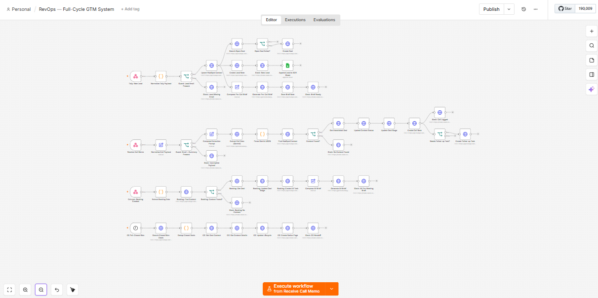
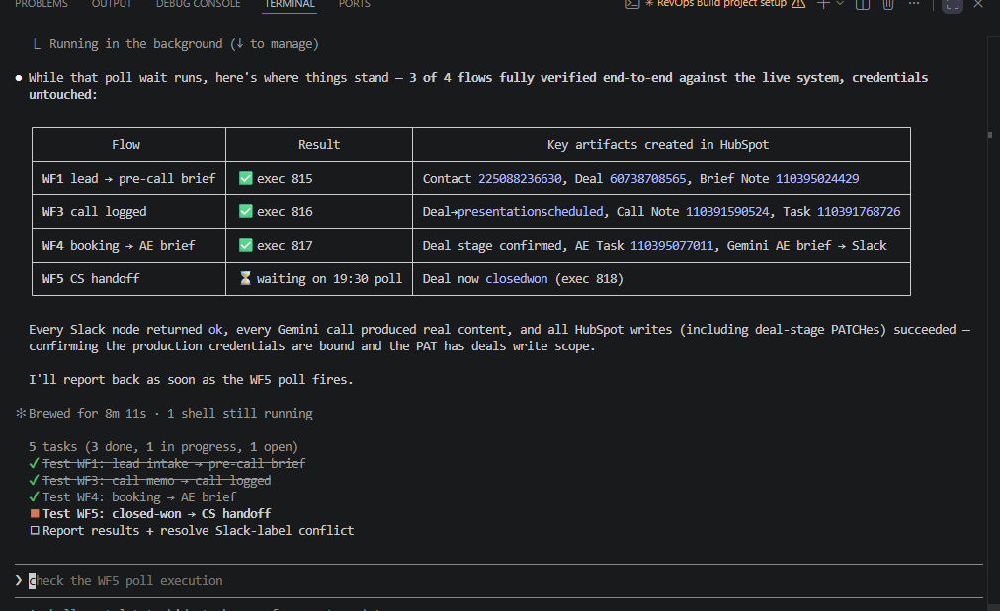
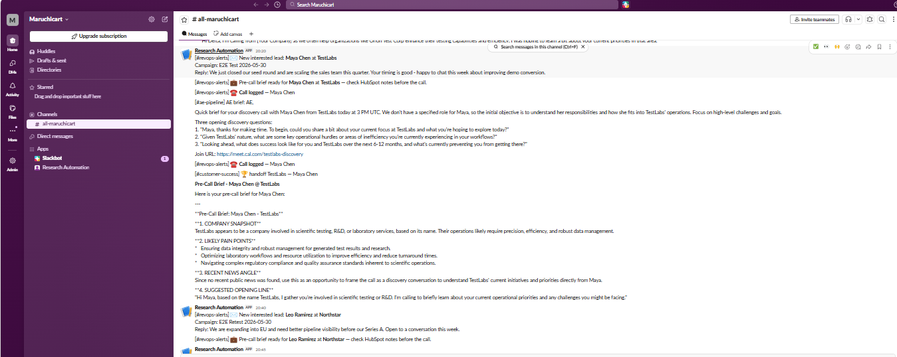

Full RevOps GTM System
Every revenue team runs on disjointed tools. I wired five of them into one pipeline, and built, debugged and shipped the whole thing live in about four hours.
Marketing, sales, AE and customer success each live in their own system, and the handoffs between them are where context goes to die. I built one n8n engine that connects the whole motion end to end, including two projects I had already built separately, my SDR CRM and my YC Outbound system, plus HubSpot, Cal.com, Notion and Slack. The entire engine was built programmatically through an n8n MCP, not dragged together by hand in the UI, and it was live in roughly four hours.
1. The Problem
A revenue team almost never runs on one platform. Marketing sources in one tool, SDRs call and log in another, AEs book and run meetings somewhere else, and customer success onboards in a fourth. Each one is fine on its own. The damage happens in the gaps between them.
A lead replies, an SDR calls, a deal gets booked, a deal closes, and at every one of those seams a human has to stop, copy context from one system into the next, and hope nothing is lost. It always is. The AE walks into a call cold. CS re-runs discovery the customer already sat through. The work is not the selling. The work is the manual stitching between disjointed tools and disjointed departments.
2. What I Built
One n8n engine that owns every handoff in the revenue motion, marketing to sales to AE to customer success, on a single canvas: four webhook triggers and one polling trigger, roughly fifty nodes, with HubSpot as the system of record and Gemini making a decision at every step.
The point that matters most: this is not five tools bought from one vendor. It is five separate systems, including two I had already built as standalone projects, made to behave as one.
- Tally → HubSpot intake. A new interested lead hits a form, gets upserted as a HubSpot contact, has a deal created, and is written into the SDR CRM, in one pass, with email enforced as the join key.
- My SDR CRM, wired in. The call-recording CRM from its own case study now fires a webhook the moment a call is logged, so the post-call summary flows straight into HubSpot without anyone re-typing it.
- AI at every decision point. Gemini writes the SDR pre-call brief, parses the post-call summary into a structured outcome and deal stage, and writes the AE pre-meeting brief, three calls across one cycle.
- Cal.com → AE handoff. A booking advances the deal, schedules a prep task, and drops a full pre-meeting brief into the AE's Slack channel.
- Closed Won → Notion CS handoff. When a deal closes, a structured onboarding page is created in Notion with the full deal history and the CS team is pinged, so the first onboarding call is not a repeat discovery call.
And the build itself is the headline. The whole thing was created by driving an n8n MCP through Claude Code, generating, debugging and testing the workflows programmatically instead of hand-dragging nodes. Empty canvas to a live, end-to-end-tested engine in about four hours.
3. How It Flows
A lead comes in through the intake form. Within seconds it is a HubSpot contact with an open deal and a Gemini-written pre-call brief attached, and the SDR sees it in the mobile CRM with a Slack alert already waiting.
The SDR calls and logs the call in the CRM. That log fires a webhook into the engine. Gemini turns the summary into a clean outcome, the deal stage moves, a call note is written, and a follow-up task is created, all without a manual update.
A meeting gets booked in Cal.com. The deal advances, a prep task lands 30 minutes ahead of the call, and the AE gets a Slack brief covering who they are meeting, where the SDR left off, what to push on, and what to watch for. When the deal is marked Closed Won, a Notion onboarding page is built from the entire deal history and customer success is handed a customer with full context.
From first reply to onboarded customer, nobody copies context between tools by hand.
4. Hard Problems Solved
- Connecting a separately-built CRM. My SDR CRM is its own project, with its own backend, mobile app and database. Rather than rebuild it inside n8n, I added a fire-and-forget webhook so that the instant a call summary is saved, the engine is triggered. The CRM stays autonomous and never needs to know HubSpot or Slack exist; if the engine is down, the call is still logged locally and nothing is lost.
- Polling instead of a paid webhook. Native HubSpot webhooks sit behind an enterprise tier (~$800/month). I used a lightweight 10-minute poll for closed deals with a dedup guard so the same deal can never create two Notion pages, idempotent handoff at zero added cost.
- One Slack webhook, many channels. The platform allowed a single incoming webhook, but the team needed alerts split across revenue, AE and customer-success channels. I routed everything through one endpoint using a strict channel convention so each team only sees what is theirs.
- Standardising on Gemini. Platform constraints made a single HTTP-based AI integration the clean path, so I standardised every inference on Gemini, brief generation and structured JSON extraction alike, with guards that fail safe on empty or malformed input.
- Email as the universal join key. Every system matches on email, so a single missing address would silently corrupt everything downstream. Guard nodes halt the run and alert the team the moment a record arrives without one.



Five disjointed tools, two of them my own projects, made to run as one revenue motion. Built in an afternoon.
- Systems integration, connecting tools and standalone projects into one coherent pipeline, not another platform to buy
- RevOps engineering at production scale, multi-trigger orchestration with HubSpot as the system of record
- AI woven into the workflow, Gemini briefs and structured extraction at every decision point
- Speed as a discipline, built, debugged, tested and shipped live in ~4 hours via an n8n MCP
You already pay for the tools. The gaps between them are where deals stall and context leaks. I'd map your revenue motion end to end, find the handoffs that are still manual, and wire them into one engine, using what you already own instead of selling you another platform. And I'd do it in days, not quarters. This whole system went from empty canvas to live in an afternoon, because I build with MCPs, not by hand.